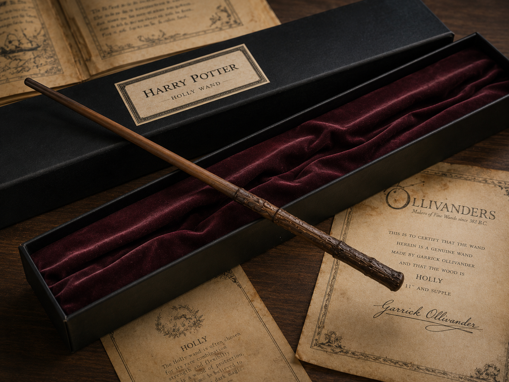
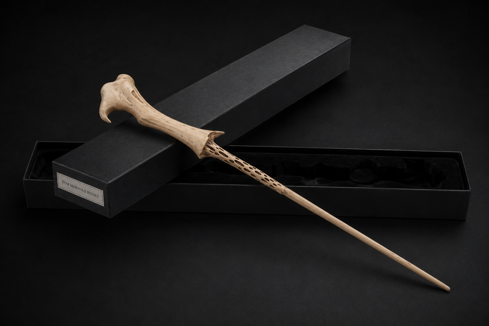
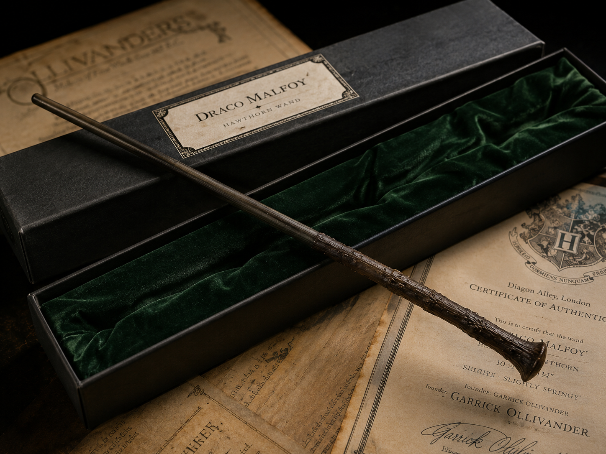
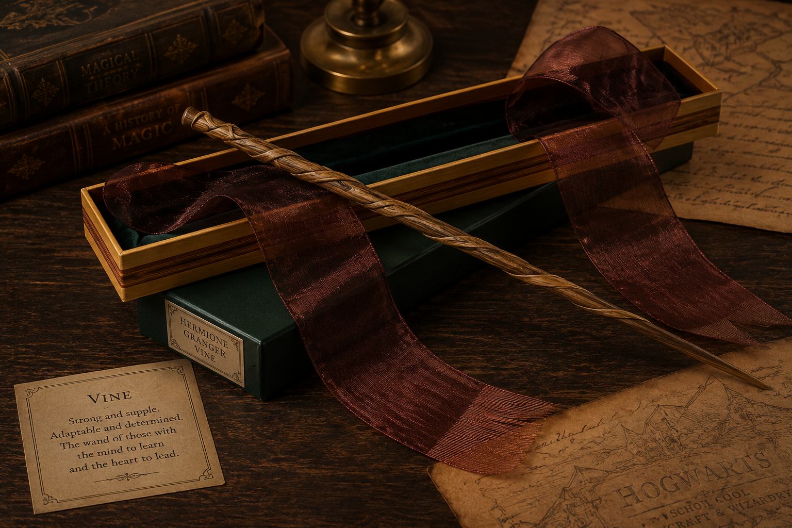
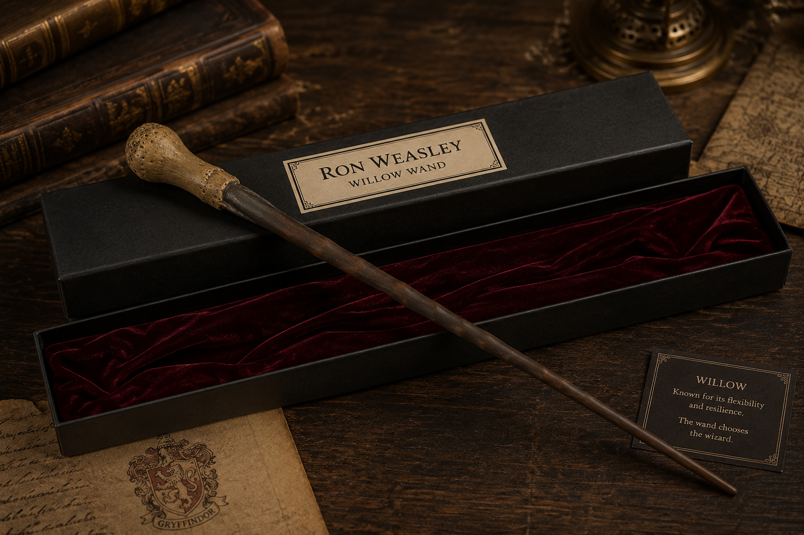
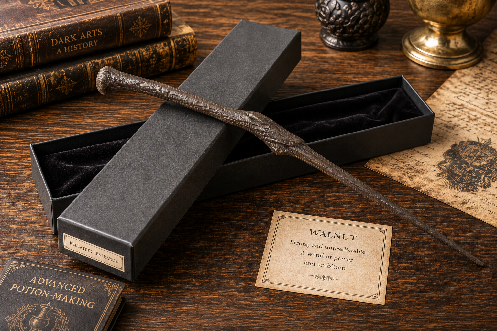
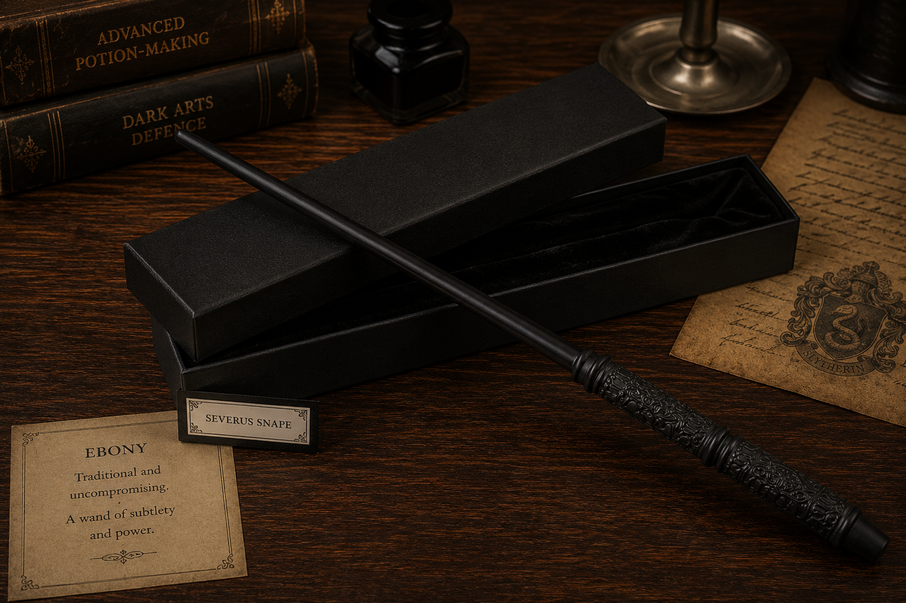
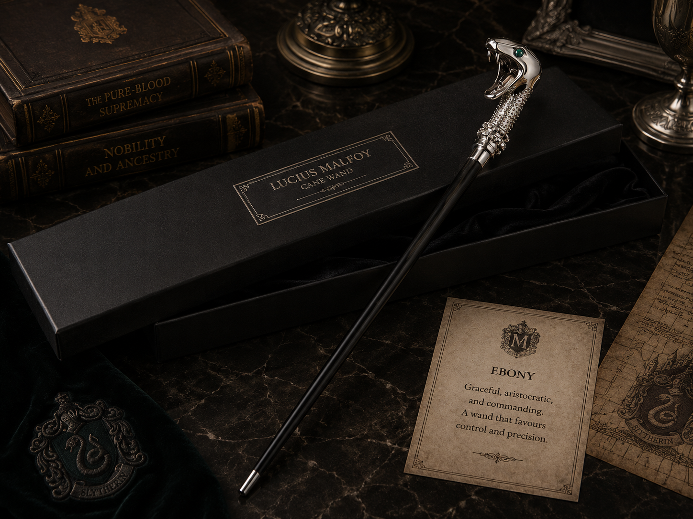
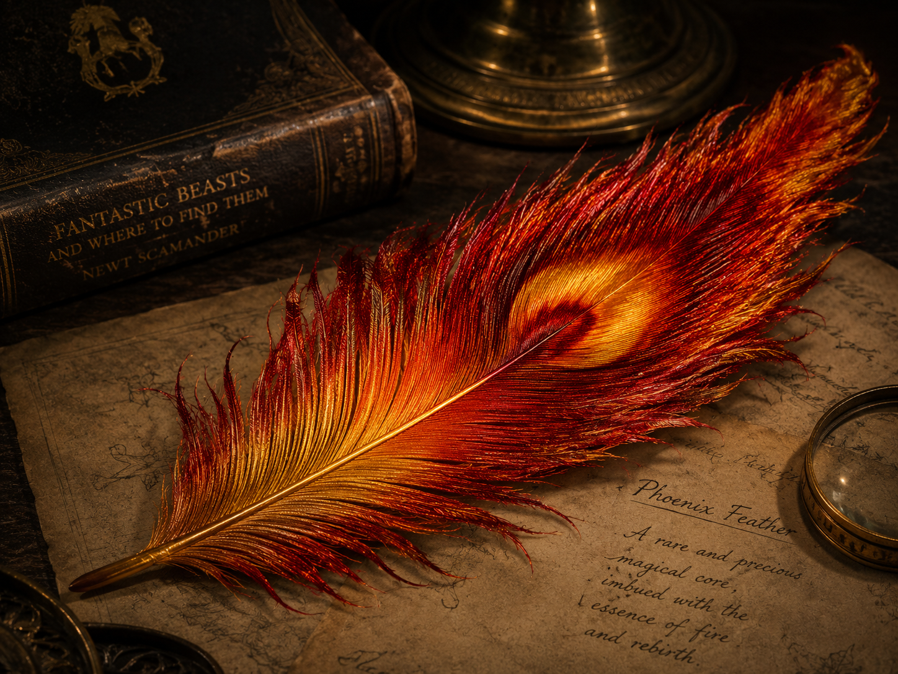
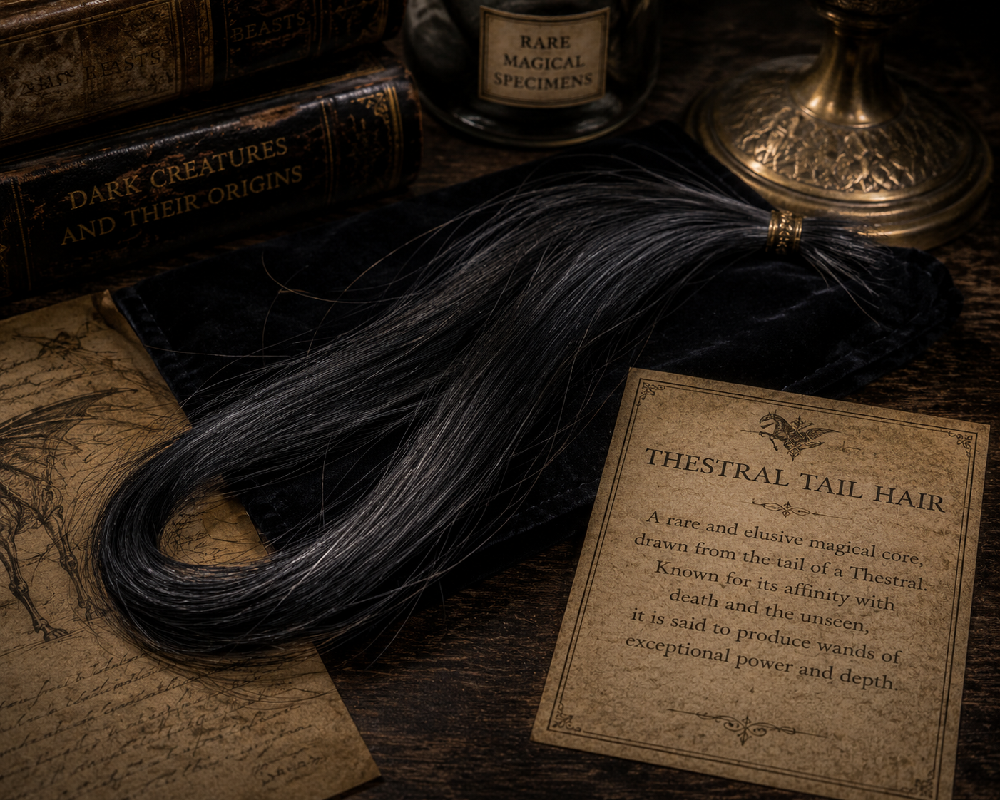

THE WANDMAKER'S ART
"The wand chooses the wizard, Mr. Potter. It's not always clear why." These immortal words spoken by Garrick Ollivander encapsulate the profound and mysterious relationship between a witch or wizard and their wand. A wand is not merely a tool; it is an extension of the wielder's magic, capable of incredible feats when perfectly matched, and resistant or volatile when mismatched.
The study of wandlore is an ancient, complex, and highly respected magical discipline. Every wand is a unique composition—a carefully selected magical wood matched with an equally potent magical core. When bound together, they forge an artifact capable of channeling the very essence of human magic.
I. LEGENDARY WANDS

HARRY POTTER’S HOLLY WAND
Crafted from holly with a phoenix feather core, measuring exactly eleven inches. This wand is described by Ollivander as a highly unusual combination. Holly is historically considered a protective wood, often choosing owners who are engaged in some dangerous and often spiritual quest.
This wand shares a profound magical connection with Lord Voldemort's yew wand, as both cores were given by the same phoenix, Fawkes. This connection, known as *Priori Incantatem*, saved Harry's life in the graveyard of Little Hangleton.
VOLDEMORT’S YEW WAND
Thirteen and a half inches long, crafted from pale yew wood with a core consisting of a single phoenix feather. Yew is a wood famously associated with death and resurrection, making it an incredibly fitting conduit for a wizard entirely obsessed with overcoming mortality.
This wand was responsible for countless atrocities during the First and Second Wizarding Wars. It performed some of the darkest magic ever recorded, yet it famously failed to kill Harry Potter on multiple occasions due to the twin cores shared between the two wands.


DRACO MALFOY’S HAWTHORN WAND
Ten inches exactly, fashioned from hawthorn with a unicorn hair core, described by Ollivander as "reasonably springy." Hawthorn wands are noted to be complex and intriguing, much like the owners they choose. They are suited to healing magic, but also remarkably adept at curses.
This wand played a pivotal role in the climax of the wizarding war. It was used to disarm Albus Dumbledore, inadvertently transferring the mastery of the Elder Wand to Draco, and later to Harry Potter when he won the hawthorn wand in a skirmish at Malfoy Manor.
HERMIONE GRANGER’S VINE WAND
Ten and three-quarter inches, composed of vine wood with a dragon heartstring core. Vine wands are relatively uncommon, often choosing owners who seek a greater purpose, who possess hidden depths, and who frequently astound those who think they know them best.
Hermione performed incredibly complex and advanced magic with this wand, far beyond her years. Its dragon heartstring core ensured it was capable of producing magic with the most flamboyant and powerful results, perfectly complementing Hermione's exceptional intellect.


RON WEASLEY’S WILLOW WAND
Fourteen inches long, willow wood containing a unicorn hair core. Willow is a rare wand wood with healing powers, often choosing wizards who possess great potential, rather than those who feel they have nothing left to learn.
This was Ron's second wand, purchased from Ollivanders after his hand-me-down ash wand snapped. It served him faithfully throughout his most dangerous adventures alongside Harry, proving its loyalty and matching his growing bravery and skill.
BELLATRIX LESTRANGE’S WALNUT WAND
Twelve and three-quarter inches, walnut wood and dragon heartstring, possessing an unyielding flexibility. Highly intelligent witches and wizards are usually offered a walnut wand first. Once matched, a walnut wand will perform any task its owner desires, provided the user is of sufficient brilliance.
In the hands of a dark witch of Bellatrix's caliber, the wand became a truly lethal weapon. Ollivander himself recognized it instantly, noting with thinly veiled horror the terrible deeds it had accomplished under her command.


SEVERUS SNAPE’S WAND
The exact wood and core of Severus Snape's wand remain unrecorded by Ollivander's modern ledgers, but its stark, black, intricately carved handle reflects the severe and disciplined nature of its master. It is a wand suited for a master of both the Dark Arts and the delicate discipline of Potions.
With this wand, Snape invented numerous spells during his time as a student, including the devastating *Sectumsempra*, and later executed Albus Dumbledore at the Headmaster's own request.
LUCIUS MALFOY’S CANE WAND
Eighteen inches in length, elm wood containing a dragon heartstring core. The wand was famously concealed within an elegant, silver-snake-headed walking stick, a testament to Lucius's aristocratic pretension and desire to conceal his weapon in plain sight.
Elm wands prefer owners with presence, magical dexterity, and a certain native dignity. Voldemort later demanded Lucius surrender this wand during the meeting at Malfoy Manor, a supreme act of humiliation and a stripping of his magical authority.

II. MAGICAL CORES

UNICORN HAIR
Unicorn hair generally produces the most consistent magic, and is the least subject to fluctuations and blockages. Wands with this core are often the most difficult to turn to the Dark Arts and are remarkably faithful to their original owners.
However, they do not typically make the most powerful wands (unless the wand wood compensates), and the hair itself is prone to melancholy if severely mishandled, which can cause the core to "die" and require replacing.
PHOENIX FEATHER
This is the rarest core type among Ollivander wands. Phoenix feathers are capable of the greatest range of magic, though they may take longer than either unicorn or dragon cores to reveal this capability.
Phoenix wands show the most initiative, sometimes acting of their own accord—a quality that many witches and wizards dislike. They are always the hardest to tame and to personalize, and their allegiance is usually hard won.


THESTRAL TAIL HAIR
An exceptionally rare and incredibly potent wand core, utilized in the creation of the legendary Elder Wand. Thestral hair is a tricky substance that only a witch or wizard who has fully mastered the concept of death can control.
Due to the association of the Thestral with death, and the difficulty of acquiring the hair from the elusive creatures, it is not a material utilized by modern wandmakers like Ollivander. It produces devastatingly powerful magic in the hands of a capable wizard.